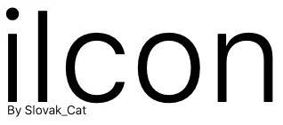

System icon Libary
Menu {BETA}
🏡 Home Screen
🔳 Categories
📂 All
🗳 Submit an icon
More Cooming soon!
Categories
🖲 Apps
📱 Devices
⊦ 🖥 Mac
⊦ 📱 iPhones
⊦ 💾 Disks
📑 Files
🗂 Folders
🖇 Other
🁢 SideBar
⊦ Folders
⊦ Devices
⊦ Other
👥 Users
© 2020 Slovak_Cat. This website is NOT sponsored or endorsed by Apple.
github.com/slovak-cat/iicon